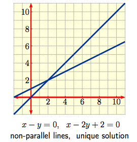
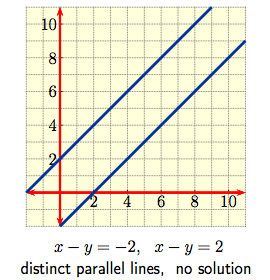
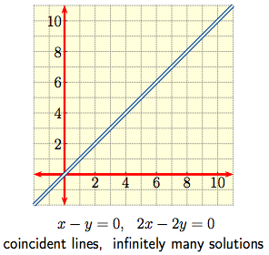

In this lesson, we will learn how to find the solution set to a system of linear equations.
A Solution of the system is a vector ${\bf x} \in \mathbb{R}^n$ that is simultaneously a solution to every equation. The set of all solutions is called the Solution Set of the linear system. It is a subset of $\mathbb{R}^n.$
The case $m = n = 2$ is a pair of simultaneous linear equations $$a_{1,1} x + a_{1,2} y \ = \ b_1\,, \qquad \qquad a_{2,1} x + a_{2,2} y \ = \ b_2\,, $$ in $2$ variables which can be thought of graphically as a pair of straight lines in the plane. The solution set then consists of the point(s) of intersection, if any, of the lines. The various possibilities are shown below.
|
 |
 |
 |
To each linear system we associate two matrices:
|
The Coefficient Matrix:
The coefficients are written as rows with entries aligned so that a column consists of the coefficients of an individual variable. $$\left[\begin{array}{cccc} a_{1,1} & a_{1,2} & \cdots & a_{1,\, n} \\ a_{2,1} & a_{2,2} & \cdots & a_{2,\, n} \\ \vdots & \vdots & \ddots & \vdots \\ a_{m,\, 1} & a_{m,\, 2} & \cdots & a_{m,\, n} \\ \end{array}\right]$$ |
The Augmented Matrix:
Now augment the coefficient matrix by adding the column of constant terms to the right of the coefficient matrix. $$\left[\begin{array}{cccc|c} a_{1,1} & a_{1,2} & \cdots & a_{1,\, n} & b_1 \\ a_{2,1} & a_{2,2} & \cdots & a_{2,\, n} & b_2 \\ \vdots & \vdots & \ddots & \vdots & \vdots \\ a_{m,\,1} & a_{m,\, 2} & \cdots & a_{m,\, n} & b_{m} \\ \end{array}\right]$$ |
If we let $A \in M_{m \times n}(\mathbb{R})$ be the coefficient matrix, and ${\bf b} \in \mathbb{R}^m$ be the vector of constants, then the augmented matrix is $\left[ \begin{array}{c|c} A & {\bf b} \\ \end{array} \right] \in M_{m \times (n+1)}(\mathbb{R}).$ The solution set to the linear system is equal to the set $$ \left\{ {\bf x} \in \mathbb{R}^n \, \middle\vert \, A {\bf x} = {\bf b} \right\}. $$
The following row operations are exactly the operations that can be performed on an augmented matrix without changing the solution set of the associated linear system.
Let's use Gaussian Elimination to solve the following system.
| Problem: Solve the system $$\begin{array}{rcc} y + z & = & 4 \, , \\ 3x + 6y -3z & = & 3 \, , \\ -2x -3y + 7z & = & 10 \, . \\ \end{array} $$ Solution: The associated augmented matrix is $$\left[ \begin{array}{c|c} A & {\bf b} \\ \end{array} \right] \ = \ \left[\begin{array}{ccc|c} 0 & 1 & 1 & 4 \\ 3 & 6 & -3 & 3 \\ -2 & -3 & 7 & 10 \\ \end{array} \right]$$ Interchange Row 1 and Row 2: $$\left[ \begin{array}{c|c} A & {\bf b} \\ \end{array} \right] \ \xrightarrow{ R_1 \, \leftrightarrow \, R_2 } \ \left[\begin{array}{ccc|c} 3 & 6 & -3 & 3 \\ 0 & 1 & 1 & 4 \\ -2 & -3 & 7 & 10 \\ \end{array} \right]$$ Scale the new Row 1 by $1/3$: $$\xrightarrow{ R_1 \, \rightarrow \, \frac{1}{3}R_1 } \ \left[\begin{array}{ccc|c} 1 & 2 & -1 & 1 \\ 0 & 1 & 1 & 4 \\ -2 & -3 & 7 & 10 \\ \end{array} \right]$$ Replace Row 3 with Row 3 plus $2$ times Row 1: $$\xrightarrow{ R_3 \rightarrow R_3 + 2 R_1 } \ \left[\begin{array}{ccc|c} 1 & 2 & -1 & 1 \\ 0 & 1 & 1 & 4 \\ 0 & 1 & 5 & 12 \\ \end{array} \right]$$ Replace Row 3 with Row 3 minus Row 2: $$\xrightarrow{ R_3 \rightarrow R_3 - R_2 } \ \left[\begin{array}{ccc|c} 1 & 2 & -1 & 1 \\ 0 & 1 & 1 & 4 \\ 0 & 0 & 4 & 8 \\ \end{array} \right]$$ | Replace Row 1 with Row 1 minus $2$ times Row 2: $$\xrightarrow{ R_1 \rightarrow R_1 - 2 R_2 } \ \left[\begin{array}{ccc|c} 1 & 0 & -3 & -7 \\ 0 & 1 & 1 & 4 \\ 0 & 0 & 4 & 8 \\ \end{array} \right]$$ Scale Row 3 by $1/4$: $$\xrightarrow{ R_3 \, \rightarrow \, \frac{1}{4}R_3 } \ \left[\begin{array}{ccc|c} 1 & 0 & -3 & -7 \\ 0 & 1 & 1 & 4 \\ 0 & 0 & 1 & 2 \\ \end{array} \right]$$ Replace Row 1 with Row 1 plus $3$ times Row 3: $$\xrightarrow{ R_1 \rightarrow R_1 + 3 R_3 } \ \left[\begin{array}{ccc|c} 1 & 0 & 0 & -1 \\ 0 & 1 & 1 & 4 \\ 0 & 0 & 1 & 2 \\ \end{array} \right]$$ Replace Row 2 with Row 2 minus Row 3: $$\xrightarrow{ R_2 \rightarrow R_2 - R_3 } \ \left[\begin{array}{ccc|c} 1 & 0 & 0 & -1 \\ 0 & 1 & 0 & 2 \\ 0 & 0 & 1 & 2 \\ \end{array} \right]$$ Convert the new augmented matrix back into a linear system: $$\begin{array}{rcc} x & = & -1 \, , \\ y & = & 2 \, , \\ z & = & 2 \, . \\ \end{array}$$ and we see the system is consistent with unique solution $$ {\bf x} = \left[ \begin{array}{c} -1 \\ 2 \\ 2 \\ \end{array} \right].$$ |
Using Gaussian Elimination, every matrix can be put into its unique, most simplified form, called its Reduced Row Echelon Form (RREF).
Leading $1$'s are also called pivots, and columns containing pivots are called pivot columns.
Using Gaussian Elimination, a matrix $A$ can be converted into exactly one matrix in reduced row echelon form, called the reduced row echelon form of $A,$ and denoted RREF$(A).$
The number of pivots in RREF$(A)$ is called the rank of $A.$
Typical structures for a matrix in Reduced Row Echelon Form are thus
$$\left[\begin{array}{ccccccccc} 1 & \ast & 0 & 0 & \ast & 0 & \ast & \cdots & \ast \\ 0 & 0 & 1 & 0 & \ast & 0 & \ast & \cdots & \ast \\ 0 & 0 & 0 & 1 & \ast & 0 & \ast & \cdots & \ast \\ 0 & 0 & 0 & 0 & 0 & 1 & \ast & \cdots & \ast\\ 0 & 0 & 0 & 0 & 0 & 0 & 0 & \cdots & 0 \\ 0 & 0 & 0 & 0 & 0 & 0 & 0 & \cdots & 0 \end{array}\right], \quad \qquad \left[\begin{array}{cccccccccc} 0 & 1 & \ast & 0 & 0 & \ast & 0 & \ast & \cdots & \ast \\ 0 & 0 & 0 & 1 & 0 & \ast & 0 & \ast & \cdots & \ast \\ 0 & 0 & 0 & 0 & 1 & \ast & 0 & \ast & \cdots & \ast \\ 0 & 0 & 0 & 0 & 0 & 0 & 1 & \ast & \cdots & \ast\\ 0 & 0 & 0 & 0 & 0 & 0 & 0 & 0 & \cdots & 0 \\ 0 & 0 & 0 & 0 & 0 & 0 & 0 & 0 & \cdots & 0 \end{array}\right]$$ where the $*$ entry can be any real number. For example, here are all RREF matrices in $M_{2 \times 3}(\mathbb{R}):$| Rank 2 | $$\left[ \begin{array}{ccc} 1 & 0 & \ast \\ 0 & 1 & \ast \\ \end{array} \right]$$ Pivot Columns 1 and 2 | $$\left[ \begin{array}{ccc} 1 & \ast & 0 \\ 0 & 0 & 1 \\ \end{array} \right]$$ Pivot Columns 1 and 3 | $$\left[ \begin{array}{ccc} 0 & 1 & 0 \\ 0 & 0 & 1 \\ \end{array} \right]$$ Pivot Columns 2 and 3 |
| Rank 1 | $$\left[ \begin{array}{ccc} 1 & \ast & \ast \\ 0 & 0 & 0 \\ \end{array} \right]$$ Pivot Column 1 | $$\left[ \begin{array}{ccc} 0 & 1 & \ast \\ 0 & 0 & 0 \\ \end{array} \right]$$ Pivot Column 2 | $$\left[ \begin{array}{ccc} 0 & 0 & 1 \\ 0 & 0 & 0 \\ \end{array} \right]$$ Pivot Column 3 |
| Rank 0 | $$\left[ \begin{array}{ccc} 0 & 0 & 0 \\ 0 & 0 & 0 \\ \end{array} \right]$$ No Pivot Columns |
A linear system with two equations and two variables will create a $2 \times 3$ augmented matrix, $\left[ \begin{array}{c|c} A & {\bf b} \\ \end{array} \right].$ The RREF of such a matrix will look like one of the above $7$ matrices, written as an augmented matrix. See below.
| $$\left[ \begin{array}{cc|c} 1 & 0 & \ast \\ 0 & 1 & \ast \\ \end{array} \right]$$ Pivot Columns 1 and 2 | $$\left[ \begin{array}{cc|c} 1 & \ast & 0 \\ 0 & 0 & 1 \\ \end{array} \right]$$ Pivot Columns 1 and 3 | $$\left[ \begin{array}{cc|c} 0 & 1 & 0 \\ 0 & 0 & 1 \\ \end{array} \right]$$ Pivot Columns 2 and 3 |
| $$\left[ \begin{array}{cc|c} 1 & \ast & \ast \\ 0 & 0 & 0 \\ \end{array} \right]$$ Pivot Column 1 | $$\left[ \begin{array}{cc|c} 0 & 1 & \ast \\ 0 & 0 & 0 \\ \end{array} \right]$$ Pivot Column 2 | $$\left[ \begin{array}{cc|c} 0 & 0 & 1 \\ 0 & 0 & 0 \\ \end{array} \right]$$ Pivot Column 3 |
| $$\left[ \begin{array}{cc|c} 0 & 0 & 0 \\ 0 & 0 & 0 \\ \end{array} \right]$$ No Pivot Columns |
| The matrix in the top left is consistent with a unique solution. The equations are of the form $x = \alpha , y = \beta.$ The unique solution is the augmented column. |
| The three matrices in the top right corner that have their augmented column as a pivot column will have no solution: each of those three matrices has a row of the form $\left[ \begin{array}{cc|c} 0 & 0 & 1 \\ \end{array} \right],$ which gives the linear equation $0 x + 0 y = 1,$ or $0 = 1.$ This is impossible, so there is no solution to the system in that case. These systems are inconsistent. |
| The three matrices in the lower left which are missing one or more pivot columns to the left of the augmented column are consistent, but they will have infinitely many solutions. This will be discussed in detail below. |
The following theorem gives the relationship between the reduced row echelon form of an augmented matrix and the solution set to the associated linear system.
It is easy enough to write the solution set for systems with a unique solution or no solution. We need a method for expressing the solution set to a consistent system with infinitely many solutions.
Let's see some examples.
|
Problem: Solve
$$\begin{array}{rcc}
y +z & = & 4 \, , \\ 3x + 6y -3z & = & 3 \, , \\
-2x -3y + 3z & = & 2 \, . \\ \end{array}$$
Solution: The associated augmented matrix is $$\left[ \begin{array}{c|c} A & {\bf b} \\ \end{array} \right] \ = \ \left[\begin{array}{ccc|c} 0 & 1 & 1 & 4 \\ 3 & 6 & -3 & 3 \\ -2 & -3 & 3 & 2 \\ \end{array} \right],$$ which row reduces to $$\left[\begin{array}{ccc|c} 1 & 0 & -3 & -7 \\ 0 & 1 & 1 & 4 \\ 0 & 0 & 0 & 0 \\ \end{array} \right].$$ |
Thus $x$ and $y$ are dependent variables, and $z$ is free. This gives the linear system $$\begin{array}{rcc} x - 3z & = & -7 \, , \\ y + z & = & 4 \, , \\ z & = & z \, . \\ \end{array}$$ Solve in terms of the free variable: $$\begin{array}{rcc} x & = & -7 + 3z \, , \\ y & = & 4 - z \, , \\ z & = & z \, . \\ \end{array}$$ Then the parametric form of the solution is $${\bf x} = \left[ \begin{array}{c} -7+3z \\ 4-z \\ z \\ \end{array} \right] = \left[ \begin{array}{c} -7 \\ 4 \\ 0 \\ \end{array} \right] + z \left[ \begin{array}{c} 3 \\ -1 \\ 1 \\ \end{array} \right]$$ |
|
Problem: Solve
$$\begin{array}{rcc}
x+3y-2z & = & 1 \, , \\ 2x+6y-4z & = & 2 \, , \\
3x+9y-6z & = & 3 \, . \\ \end{array}$$
Solution: The associated augmented matrix is $$\left[ \begin{array}{c|c} A & {\bf b} \\ \end{array} \right] \ = \ \left[\begin{array}{ccc|c} 1 & 3 & -2 & 1 \\ 2 & 6 & -4 & 2 \\ 3 & 9 & -6 & 3 \\ \end{array} \right],$$ which row reduces to $$\left[\begin{array}{ccc|c} 1 & 3 & -2 & 1 \\ 0 & 0 & 0 & 0 \\ 0 & 0 & 0 & 0 \\ \end{array} \right].$$ |
Thus $x$ is the dependent variable, and $y$ and $z$ are free. This gives the linear system $$\begin{array}{rcc} x+3y-2z & = & 1 \, , \\ y & = & y \, , \\ z & = & z \, . \\ \end{array}$$ Solve in terms of the free variables: $$\begin{array}{rcc} x & = & 1-3y+2z \, , \\ y & = & y \, , \\ z & = & z \, . \\ \end{array}$$ Then the parametric form of the solution is $${\bf x} = \left[ \begin{array}{c} 1-3y+2z \\ y \\ z \\ \end{array} \right] = \left[ \begin{array}{c} 1 \\ 0 \\ 0 \\ \end{array} \right] + y \left[ \begin{array}{c} -3 \\ 1 \\ 0 \\ \end{array} \right] + z \left[ \begin{array}{c} 2 \\ 0 \\ 1 \\ \end{array} \right] $$ |
A homogeneous system is always consistent. In particular, if $A$ is the coefficient matrix for the system, then $A {\bf x} = {\bf 0}$ always has the Trivial Solution $${\bf x} = \left[ \begin{array}{c} 0 \\ \vdots \\ 0 \\ \end{array} \right].$$
All the examples we've seen so far have been nonhomogeneous. Let's see some examples of homogeneous systems.
|
Problem: Solve
$$\begin{array}{rcc}
x+y & = & 0 \, , \\ x-y & = & 0 \, . \\ \end{array}$$
Solution: The associated augmented matrix is $$\left[ \begin{array}{c|c} A & {\bf b} \\ \end{array} \right] \ = \ \left[\begin{array}{cc|c} 1 & 1 & 0 \\ 1 & -1 & 0 \\ \end{array} \right],$$ which row reduces to |
$$\left[\begin{array}{cc|c} 1 & 0 & 0 \\ 0 & 1 & 0 \\ \end{array} \right].$$ This gives the linear system $$\begin{array}{rcc} x & = & 0 \, , \\ y & = & 0 \, . \\ \end{array}$$ Thus the only solution is the trivial solution $${\bf x} = \left[ \begin{array}{c} 0 \\ 0 \\ \end{array} \right].$$ |
Since the augmented column of a matrix associated with a homogeneous system is always zero, those entries never change under elementary row operations. Thus it is customary to leave off the augmented column of zeroes during Gaussian elimination, and simply row reduce the coefficient matrix.
|
Problem: Solve
$$\begin{array}{lcc}
x_1+3x_2-x_4 & = & 0 \, , \\ -3x_1-9x_2+x_3+x_4 & = & 0 \, , \\
2x_1+6x_2+x_3-4x_4 & = & 0 \, . \\ \end{array}$$
Solution: The associated coefficient matrix is $$A \ = \ \left[\begin{array}{cccc} 1 & 3 & 0 & -1 \\ -3 & -9 & 1 & 1 \\ 2 & 6 & 1 & -4 \\ \end{array} \right],$$ which row reduces to $$\left[\begin{array}{cccc} 1 & 3 & 0 & -1 \\ 0 & 0 & 1 & -2 \\ 0 & 0 & 0 & 0 \\ \end{array} \right].$$ Thus $x_1$ and $x_3$ are dependent variables, and $x_2$ and $x_4$ are free. |
This gives the linear system $$\begin{array}{rcc} x_1+3x_2-x_4 & = & 0 \, , \\ x_2 & = & x_2 \, , \\ x_3-2x_4 & = & 0 \, , \\ x_4 & = & x_4 \, . \\ \end{array}$$ Solve in terms of the free variables: $$\begin{array}{rcc} x_1 & = & -3x_2+x_4 \, , \\ x_2 & = & x_2 \, , \\ x_3 & = & 2x_4 \, , \\ x_4 & = & x_4 \, . \\ \end{array}$$ Then the parametric form of the solution is $${\bf x} = \left[ \begin{array}{c} -3x_2+x_4 \\ x_2 \\ 2x_4 \\ x_4 \\ \end{array} \right] = x_2 \left[ \begin{array}{c} -3 \\ 1 \\ 0 \\ 0 \\ \end{array} \right] + x_4 \left[ \begin{array}{c} 1 \\ 0 \\ 2 \\ 1 \\ \end{array} \right] $$ |